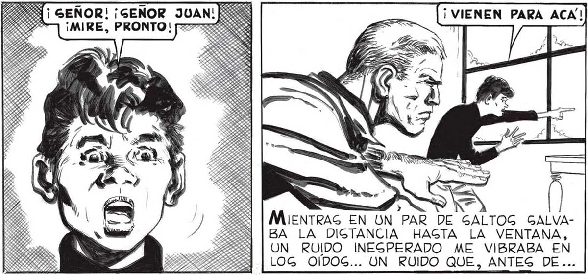

li GEGURO QUE NO! GIEMPRE QUE ME DEN BIEN DE COMER.. ¿ ADONDE VAN, GEWo ¡ GEÑOR! ¡SENOR JUAN ¡MIRE, PRONTO! 75 DE EGO PUEDEG EGTAR TRANQUILO, PA-| BLO. COMERAG LO MIGMO QUE TODOG Ásí aueDO PABLO MENO, DE DOCE AÑOG DE EDAD, INCORPORADO A NUEGTRO PEQUEÑO EQUIPO, POR IDEA DE FAVALLI LOG UNO DE NOGOTROG DEBE QUEDAR GIEMPRE AQUÍ, POR LO QUE PUDIERA GUCEDER, LOG OTROG DOG IRAN JUNTOS A BUGCAR LO QUE HAGA FALTA: CADA UNO HARA DOG VIAJEG Y DEGCANGARA DURANTE EL TERCERO. AL ALMACEN, A BUSCAR TO-L AS DAG LAS BEBIDAG NO ALCOHOLICAG QUE ENCUEN TREN. Y DEJA LO DE GEÑOR: 1-48 ¡0 TREG HOMBRES NOG ORGANIZA MOG EN TURNOG PARA EL TRABAJO DE TRAER AL CHALET TODO LO NECESARIO PARA LA GUBGIGTENCIA Gl,, ELENA... TAMBIÉN ELLOG NO ABRIRAN NUNCA Y MAG ¿Y LA VERDULERÍA 2 TAMBIÉN ELLOG EGTARAN... No pune ceGUIR OCUPANDOME DE PABLO: TUVE QUE HACER A ELENA Y A MARTITA UN PROLIJIGIMO RE: LATO DE MIG ANY VENTURAGS EN EL EXTERIOR; NO GE CANGABAN DE HACERME DESCRIBIR EL DEGOLADO CUADRO QUE O) a FRECÍAN LAG [ma ? Y Y 7 / nd ADS 'N CALLES. ...LA CATAGTROFE, NO ME HUBIERA HECHO NI SIQUIERA AR QUEAR UNA CEJA. PERO QUE AHORA ME EGTREMECÍA DE FUNEGTOG PREGAGIOG... > l y AN ÍMIENTRAS EN UN PAR DE GALTOG GALVABA LA DIGTANCIA HAGTA LA VENTANA, UN RUIDO INESPERADO ME VIBRABA EN LOG OÍDOS... UN RUIDO QUE, ANTES DE... ¿ Y EL COLEGIO, PAPA 2 ¿CUANDO HABRA” CLAGE OTRA VEZ 2 »”. Je > y - ó mM A EG EL FORGON |. DEL ALMACÉN...)De AcuerDO CON EL PLAN DE TOR NOG, LA PROXIMA GAL!DA EGTUVO A CARGO DE FAVALLI Y DE LUCAG; YO QUE HABÍA GALIDO DOG VECES, QUEDÉ EN LA CAGA. IMPOGIBLE | GUNA VEZ...
